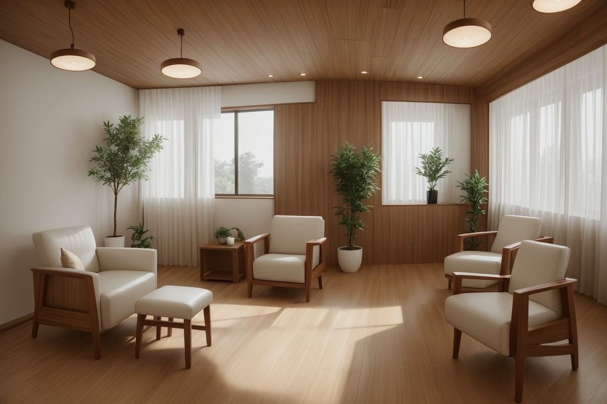
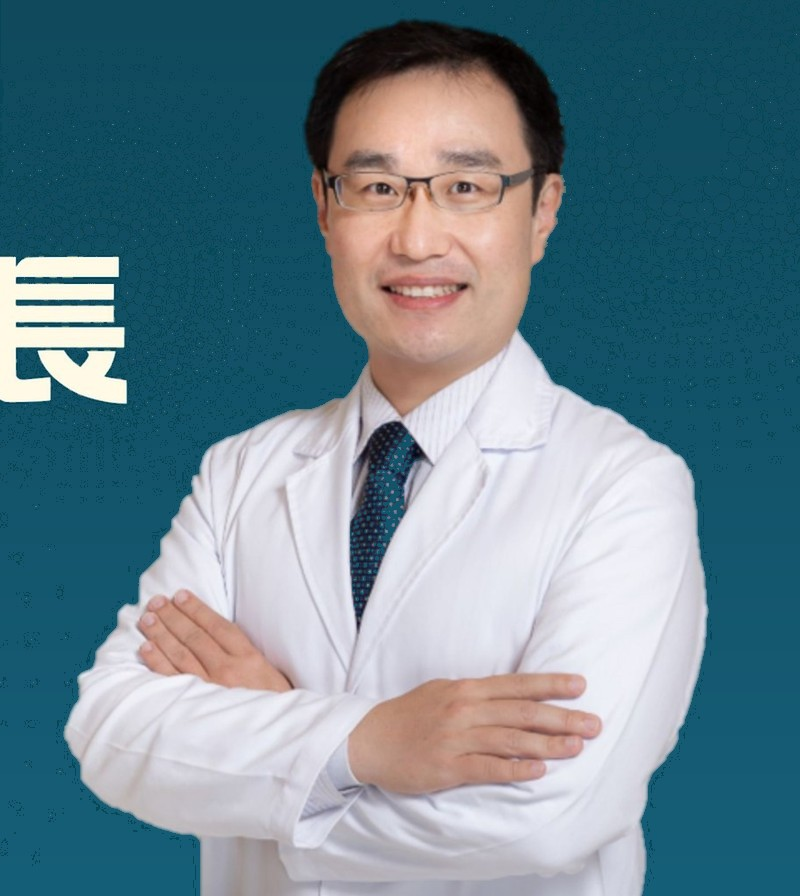

SCROLL
載入中

伊萊診所，座落於好山好水的宜蘭，由心臟血管內科權威施奕仲院長創立。
我們相信，真正的健康不僅是沒有疾病，而是身心靈的平衡與和諧。因此伊萊診所不僅提供常規醫療服務，更致力於引進國際先進的整合輔助醫學技術，為宜蘭鄉親提供更多元、更個人化的健康照護選擇。
從分子點滴到靜脈雷射，從SIS磁場到氫氣治療——每一項療法都是我們對「醫學的深度，溫暖的照護」這個承諾的實踐。
結合主流醫學與輔助療法，提供全方位的健康照護方案
將高濃度維生素、胺基酸等營養素直接輸入體內，快速補充細胞所需，提升免疫力與修復力。
低能量雷射光照射血液，改善血液循環、調節免疫系統，對三高、失眠、疲勞有顯著效果。
透過特定頻率的脈衝磁場，促進細胞代謝與組織修復，對於慢性疼痛與發炎有良好改善。
吸入高濃度氫氣，利用其選擇性抗氧化特性，減少體內氧化壓力，延緩老化、改善發炎。
非侵入性的心臟輔助治療，透過腿部加壓促進冠狀動脈血流，改善心絞痛與心臟功能。
根據個人體質與健康狀況，量身打造整合型健康促進方案，從源頭預防疾病發生。
心臟血管內科權威 · 整合輔助醫學先驅
施奕仲醫師曾任羅東博愛醫院心臟血管內科主任，擁有數十年臨床經驗。他深刻體認到現代醫學的局限，因此遠赴國內外進修整合輔助醫學，將預防醫學、營養醫學與常規治療結合，開創更全面的醫療模式。

不只看病，而是看一個人——從根源改善健康
不只診斷疾病，更深入了解您的體質、生活型態與健康目標
結合常規醫學與整合輔助療法，量身打造最適合您的治療計畫
定期追蹤治療成效，動態調整方案，確保最佳健康效益
不只是治療，更教會您如何自主管理健康，成為自己健康的主人